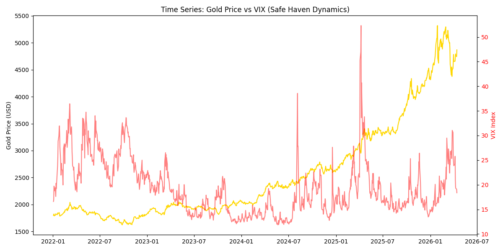
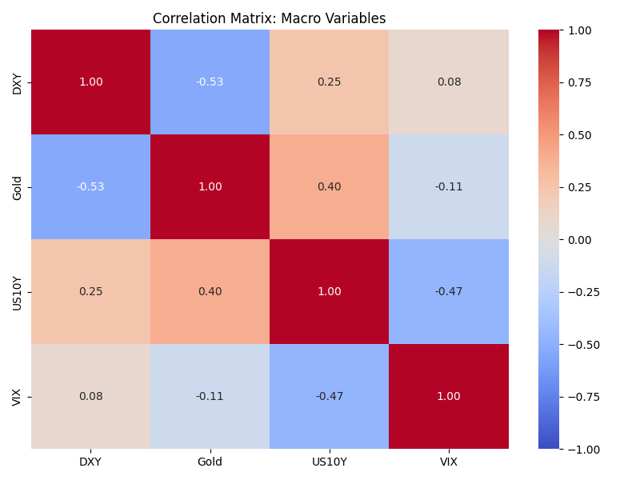

本網頁由 GitHub Actions 自動抓取最新 Yahoo Finance 數據並重新繪製。這展示了戰爭風險升溫時，黃金價格與傳統總經指標的動態關係。
此圖表檢驗研究假設一：當重大地緣政治事件發生，VIX 指數飆升時，黃金作為避險資產是否出現顯著的價格推升。

此圖表檢驗研究假設二：在極端風險下，黃金與美元 (DXY)、美國十年期公債殖利率 (US10Y) 傳統的負相關性是否發生改變。
